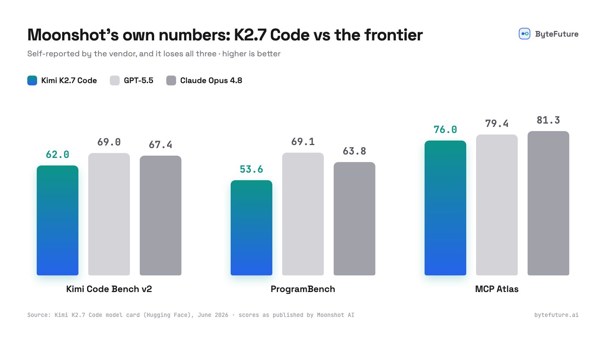

昨日、Moonshot AI が Hugging Face に Kimi K2.7 Code を公開しました。1 兆パラメータの Mixture-of-Experts コーディングモデル（アクティブ 32B）で、コンテキストウィンドウは 256K、ウェイトは Modified MIT ライセンスで公開されています。
私たちの Claude Fable 5 の記事 を読んだ方なら、今回はその論理がちょうど逆向きに動いているとわかるはずです。Fable 5 では能力は実証済みで、リスクは価格にありました。K2.7 Code では価格はごくわずかで、能力こそが未解決の問いです。このモデルは公開からまだ 1 日、第三者によるベンチマークはまだなく、Moonshot 自身の数値でもフロンティアの後塵を拝しています。どちらの状況も行き着く姿勢は同じです。すでに使っているコーディング環境の中で、安く、いつでも引き返せる実験を回すことです。
この実験を単なる置き換え以上に面白くしている要素が一つあります。入力 100 万トークンあたり 0.95 ドル、出力 100 万トークンあたり 4.00 ドル という価格で、K2.7 Code は入力で Claude Fable 5 のおよそ 10 分の 1、出力で 12 分の 1 のコストです。これは別の役割を与えられるほど安いということです。あなたの SOTA モデルと並んで働き、高価なモデルが難所を受け持つ間、定型的なファンアウト作業を引き受けるのです。
K2.7 Code は Token Station で kimi/kimi-k2.7-code として利用でき、Moonshot の定価のまま上乗せゼロで提供されます。10 ドルの登録クレジット でかなりの量をまかなえます。
わかっていること（そしてわからないこと）
モデルカード より：
- コーディングエージェント向けに作られている。Kimi K2.6 のコーディング特化型の後継で、長期にわたるソフトウェアエンジニアリングに合わせて調整されています。インターリーブされた思考、複数ステップのツール呼び出し、MCP 対応、そしてターンをまたいで保持される推論が特徴です。
- 思考トークンが K2.6 より約 30% 少ないうえにコーディングスコアは高く、これは出力トークン単位で課金される場合に効いてきます。
- 総パラメータ 1T、アクティブ 32B、384 のエキスパート、INT4 のネイティブ対応、加えて画像入力用の 400M パラメータのビジョンエンコーダを備えています。
- オープンウェイト、Modified MIT。モデル一式をダウンロードして、vLLM や SGLang で自分でホストできます。
そして正直な部分です。Moonshot はフロンティアとの比較を自ら公開しており、そこでは K2.7 Code が負けています。

自社モデルが負けるベンチマークを公開するベンダーは、その数値が正直である良い証しです。しかも差は見苦しいものではありません。Moonshot のコーディングベンチで GPT-5.5 に約 7 ポイント差、ツール利用ではより接近しています。前回の Kimi（K2.6）は現在、Artificial Analysis Intelligence Index で最強のオープンウェイトモデルです。まだ誰も知らないのは、K2.7 Code があなたのコードベースで、あなたの環境で、長いエージェント的セッションを通してどう振る舞うかです。この実験が解き明かすのは、まさにその未知数です。
私たちの Grok Build の記事と同じ趣旨で、一点はっきりさせておきます。モデルとしての K2.7 Code は、Moonshot 自身のコーディング環境である Kimi Code CLI 向けに最適化されています。その CLI は必要ありません。このモデルは OpenAI 互換および Anthropic 互換の API を話し、Token Station が既存の環境から送られてくるものを何であれ変換します。
価格：フロンティアの隣では誤差のようなもの
以下はすべて、各プロバイダーの定価のまま Token Station で利用できます。
| モデル | 入力 / 1M | 出力 / 1M | コンテキスト |
|---|---|---|---|
kimi/kimi-k2.7-code | $0.95 | $4.00 | 256K |
xai/grok-build-0.1 | $1.00 | $2.00 | 256K |
anthropic/claude-sonnet-4-6 | $3.00 | $15.00 | 1M |
anthropic/claude-opus-4-8 | $5.00 | $25.00 | 1M |
openai/gpt-5.5 | $5.00 | $30.00 | 1M |
anthropic/claude-fable-5 | $10.00 | $50.00 | 1M |
K2.7 Code の価格なら、10 ドルの登録クレジットでおよそ 1,000 万の入力トークン、または 250 万の出力トークンを買えます。同じクレジットで Fable 5 なら一午後分でしたが、ここでは数週間分の評価に充てられます。この実験の下振れリスクはほぼゼロです。
本当の実験：仕事を分担させる
コーディングエージェントはすでに作業を階層に分けています。計画と難しい推論が行われるメインループがあり、そしてファンアウトがあります。ファイルを読み、検索を実行し、テストを走らせ、結果を要約するサブエージェントたちです。ファンアウトはトークンの大半を消費しますが、必要な賢さは最も少ないのです。
その分担こそ、100 万あたり 4 ドルのモデルが 100 万あたり 50 ドルのモデルの隣に居場所を得る場面です。Fable 5 か Opus 4.8 を運転席に座らせ、定型作業は K2.7 Code に渡しましょう。Moonshot の数値が実運用でも持ちこたえるなら、委譲したタスクの品質低下はわずかで、委譲したトークンごとのコスト削減は 10 倍以上になります。
必要なもの
- Token Station のアカウント（無料登録。10 ドルのクレジット付き、カード不要、Moonshot のアカウントも不要）
- あなたの Token Station API キー（
gw-で始まります） - インストール済みの Claude Code、Codex、または OpenClaw
Claude Code の設定：2 段階の分担
Claude Code はモデルの階層を環境変数として公開しており、仕事を分担させる実験を回すのに最もすっきりした場所です。Opus 枠を Claude Fable 5 のために確保し、それ以外はすべて主力モデルに任せましょう。
# Token Station endpoint + auth
export ANTHROPIC_BASE_URL="https://models.bytefuture.ai"
export ANTHROPIC_AUTH_TOKEN="gw-YOUR_TOKEN_STATION_KEY"
# Top tier: Fable 5 takes the genuinely hard problems
export ANTHROPIC_DEFAULT_OPUS_MODEL="anthropic/claude-fable-5"
# Everything else runs on the workhorse
export ANTHROPIC_DEFAULT_SONNET_MODEL="kimi/kimi-k2.7-code"
export ANTHROPIC_DEFAULT_HAIKU_MODEL="kimi/kimi-k2.7-code"
export CLAUDE_CODE_SUBAGENT_MODEL="kimi/kimi-k2.7-code"
claudeこれで通常のセッションは最初から最後まで K2.7 Code で動きます。メインループ、すべてのサブエージェント、すべてのバックグラウンド検索が、出力 100 万あたり 50 ドルではなく 4 ドルで課金されます。問題が本当にフロンティア級の判断を必要とするときは /model opus で昇格させれば Fable 5 が引き継ぎ、難所が終わったら元に戻します。高価なモデルは、その価格にふさわしい役割、すなわち必要なときに呼ぶ専門家になります。
Fable 5 の価格にひるむなら、Opus 枠の anthropic/claude-fable-5 を anthropic/claude-opus-4-8 に差し替えてください。この昇格パターンはどの階層でも機能します。
Codex の設定
Codex は 1 セッションにつき 1 モデルですが、profiles を使えば呼び出し単位で同じ分担ができます。主力モデルをデフォルトにし、Fable 5 用に名前付きの昇格プロファイルを用意しておきます。
mkdir -p ~/.codex
cat > ~/.codex/config.toml <<'EOF'
# Default: the workhorse
model = "kimi/kimi-k2.7-code"
model_provider = "token_station"
[model_providers.token_station]
name = "token_station"
base_url = "https://models.bytefuture.ai/v1"
env_key = "TOKEN_STATION_API_KEY"
wire_api = "responses"
# Escalation: Fable 5 on demand
[profiles.deep]
model = "anthropic/claude-fable-5"
EOF
export TOKEN_STATION_API_KEY="gw-YOUR_TOKEN_STATION_KEY"
codex # routine work on K2.7 Code
codex --profile deep # hard problems on Fable 5普段は素の codex を起動し、主力モデルの料金で済ませます。タスクがフロンティアモデルに値するときだけ、codex --profile deep がその呼び出しに限って Fable 5 を呼び込みます。設定の他の部分は一切動きません。
OpenClaw の設定
OpenClaw はこの分担を第一級の設定にしています。agents.defaults.subagents.model で別途指定しない限り、サブエージェントは呼び出し元のモデルを継承します（ドキュメント）。したがって Fable 5 が運転席に座りつつ、生成されたすべてのサブエージェントを K2.7 Code で動かせます。
{
"models": {
"mode": "merge",
"providers": {
"token-station": {
"baseUrl": "https://models.bytefuture.ai/v1",
"apiKey": "${TOKEN_STATION_API_KEY}",
"api": "anthropic-messages",
"models": [
{
"id": "anthropic/claude-fable-5",
"name": "Claude Fable 5 (Token Station)",
"contextWindow": 1000000,
"maxTokens": 128000
},
{
"id": "kimi/kimi-k2.7-code",
"name": "Kimi K2.7 Code (Token Station)",
"contextWindow": 256000,
"maxTokens": 32768
}
]
}
}
},
"agents": {
"defaults": {
"model": { "primary": "token-station/anthropic/claude-fable-5" },
"subagents": { "model": "token-station/kimi/kimi-k2.7-code" }
}
}
}メインエージェントはフロンティア級の判断を保ち、並列のファンアウト（トークンを食う部分）は主力モデルの料金で課金されます。全体を代わりに K2.7 Code で動かしたい場合は、agents.defaults.model.primary をそれに向ければよいだけです。いずれにせよ両モデルは同じキーの背後にあります。
知っておきたいクセ
- 思考は常にオン。K2.7 Code は回答の前に推論し、その推論をターンをまたいで持ち越します。これをオフにはできません。推論トークンを出力の請求に見込んでおきましょう。K2.6 比で 30% 削減されているぶん、負担はやわらぎます。
- 256K のコンテキスト。十分に広いものの、フロンティアの Claude や GPT モデルの 1M ウィンドウの 4 分の 1 です。長いエージェント的セッションはより早く圧縮が起こります。
- ホームの環境がある。Moonshot は Kimi Code CLI 向けに調整しているので、それ以外の場所では時折ざらつきが出ると考えておきましょう。Token Station のツール名・パラメータ名の変換が、プロトコルレベルの食い違いを処理します。
- 出口の道は両方向に開いている。実験が失敗したら、設定を削除すればよいだけです。成功したら、ウェイトは Hugging Face 上で Modified MIT として公開されています。いずれまったく同じモデルを自分のハードウェアでホストできます。自己ホストへと昇格しうるクラウド実験は、ハイブリッド推論の物語を小さくしたものです。
実験を回す
あなたの高価なモデルには過剰な仕事を K2.7 Code に与えましょう。サブエージェントの検索、テスト実行、定型コード、要約などです。1 週間ほど様子を見て、どこで持ちこたえ、どこでつまずくかを見極め、それに応じて分担を決めます。同じ Token Station キーで anthropic/claude-fable-5、anthropic/claude-opus-4-8、kimi/kimi-k2.7-code を並べて動かせるので、比較は最初から組み込まれています。
models.bytefuture.ai で登録し（10 ドルの無料クレジット、カード不要）、公開からまだ 1 日のオープンウェイトモデルが、10 分の 1 の価格であなたのエージェントの仕事量の半分を担えるかどうか、確かめてみてください。